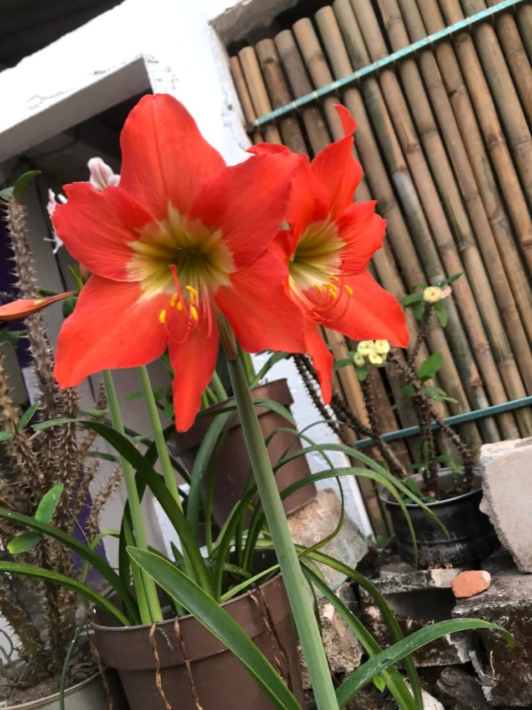

Descripción
La flora de esta área comprende una amplia gama de especies vegetales, desde árboles frutales hasta plantas ornamentales. Estas plantas no solo embellecen el paisaje, sino que también juegan un papel crucial en el equilibrio ecológico y en el sustento de las comunidades locales. En este informe, se explorarán algunas de las plantas más representativas de San Cristóbal, destacando su nombre científico, sus nombres comunes y sus características principales.
Flora
Incluye una variedad de especies que se adaptan a las condiciones climáticas y geográficas de la región. A continuación, se presenta una descripción de algunas de las plantas más destacadas:
1. Bugandilia (Bougainvillea spectabilis): Planta ornamental conocida por sus vistosas brácteas de colores brillantes, que pueden ser púrpuras, rosas, rojas o blancas.
2. Paragüita (Cyperus alternifolius): Planta acuática que se utiliza frecuentemente en estanques y jardines acuáticos.
3. Limón (Citrus limon): Árbol frutal que produce limones, frutos cítricos de sabor ácido que se utilizan en una variedad de platillos y bebidas. El limón es conocido por su alto contenido de vitamina C.
4. Almendro (Prunus dulcis): Árbol frutal que produce almendras, semillas comestibles que se consumen tanto crudas como procesadas. Las almendras son una fuente rica de nutrientes, incluyendo proteínas y grasas saludables.
5. Guaje (Leucaena leucocephala): Árbol frutal que produce guajes, vainas comestibles que se utilizan en la preparación de platillos tradicionales. Los guajes son ricos en proteínas y otros nutrientes.
6. Guapinol (Hymenaea courbaril): Árbol frutal que produce guapinol, frutos comestibles y resina utilizada en la industria. El guapinol es conocido por su madera dura y resistente.
7. Papaya (Carica papaya): Árbol frutal que produce papayas, frutos grandes y dulces con una pulpa de color naranja.
8. Ciruela (Prunus domestica): Árbol frutal que produce ciruelas, frutos redondos y jugosos con una piel que puede variar desde amarilla hasta morada.
La flora de San Cristóbal, es un reflejo de la riqueza natural y la diversidad biológica de la región. La presencia de una variedad de árboles frutales, plantas ornamentales y especies nativas no solo embellece el paisaje, sino que forma parte de la biodiversidad de México.